Post-Processing#
ParaView is an open-source, multi-platform scientific data analysis and visualization tool that enables analysis and visualization of extremely large datasets.
Users can go to ParaView to download this software. The ParaView Documentation can be found at PraView documentation online. This tutorial will briefly
introduce a few useful functions to view the results from OpenFDEM.
It is available to export Tecplot-supported results if you have the access to this commerical software. You can find more instructions from Tecplot Documentation to know how to visualize the dumpered results.
Getting started with Paraview#
ParaView is the graphical front-end to the ParaView application. The UI provides panels for you to inspect and modify
the pipelines, to change parameters that in turn affect the processing pipelines,
to perform various data selection and inspection actions to introspect the data,
and to generate renderings.
The window after you turn on Paraview is comprised of menus, dockable panels, toolbars, and the viewport – the central portion of the application window. Menus provide the standard set of options typical with a desktop application including options for opening/saving files (File menu), for undo/redo (Edit menu), for the toggle panel, and for toolbar visibilities (View menu). Additionally, the menus provide ways to create sources that generate test datasets of various types (Sources menu), as well new filters for processing data (Filters menu). The Tools menu provides access to some of the advanced features in paraview such as managing plugins and favorites.

ParaView window#
Panels provide you with the ability to peek into the application’s state. For example, you can
inspect the visualization pipeline that has been set up ( Pipeline
Browser ), as well as the memory that is being used ( Memory Inspector ) and the parameters or properties
for a processing module ( Properties panel). Several of the panels also
allow you to change the values that are displayed, e.g., the Properties panel not only
shows the processing module parameters, but it also allows you to change them.
Several of the panels are context sensitive. For example, the Properties
panel changes to show the parameters from the selected module as you change the
active module in the Pipeline Browser .
Results visualization for OpenFDEM#
Go to the toolbar > File > Open… and choose the file path of the results and click OK. It will import all results under this category. You may also expand the group and select a single file.
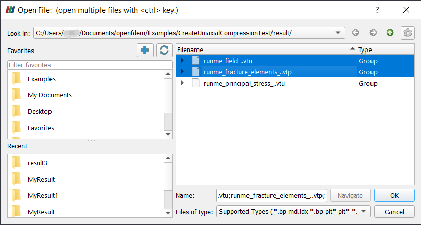
Figure 1: Import Files to ParaView#
Click Apply to show the data.
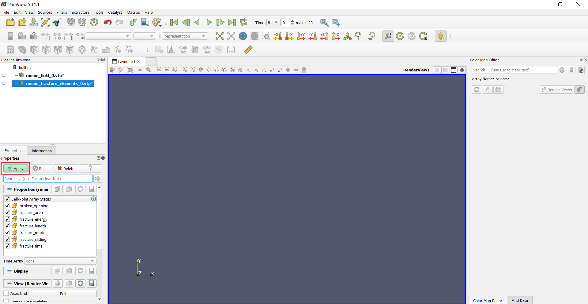
Figure 2: Apply the data to show#
If the figure of the result is too small, choose reset to rescale the model.
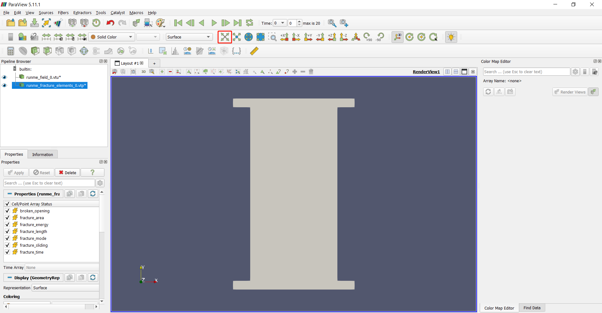
Figure 3: Reset the view#
Select “runme_field_0.vtu” and change the result to “Stress”
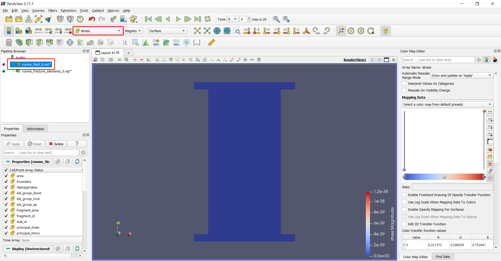
Figure 4: Show the Stress#
To go to the next frame, users may use the arrow, select specific frame number, or enter the frame number. In this example, the last frame will be used.
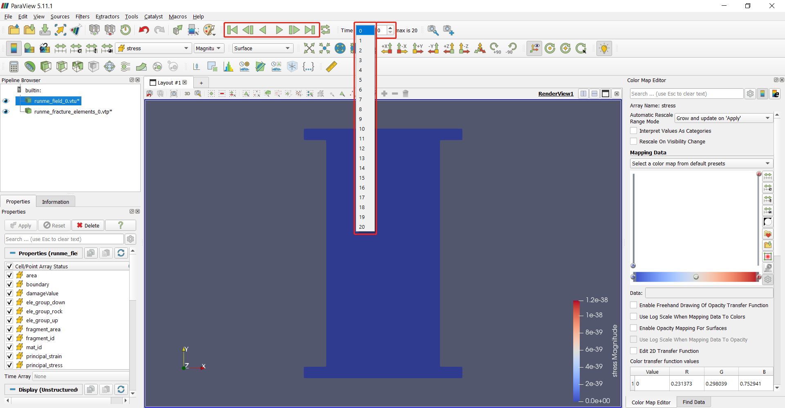
Figure 4: Show a specific frame#
Select “Clamp and update every timestep” for Automatic Rescale Range Mode.
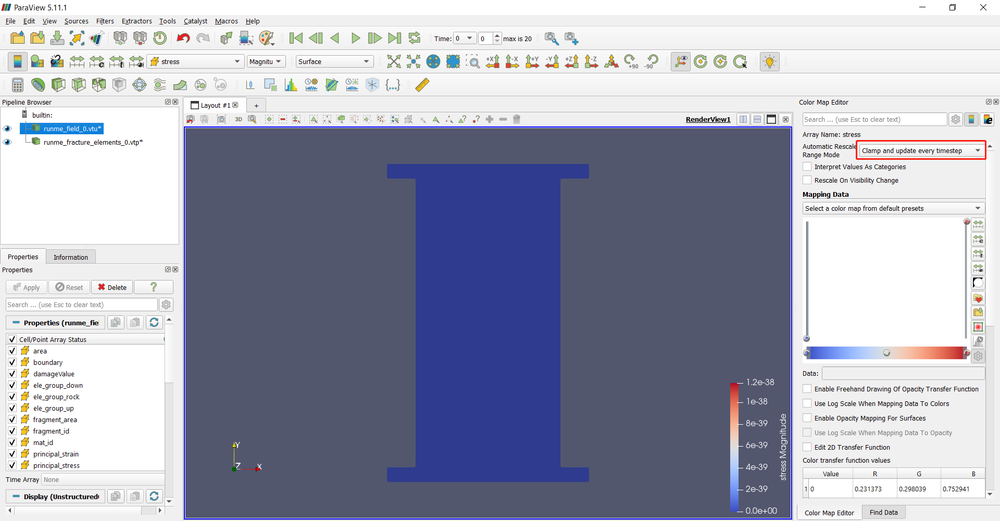
Figure 5: Clamp the range#
Go to the last step of the result. The sample is fractured under compression.
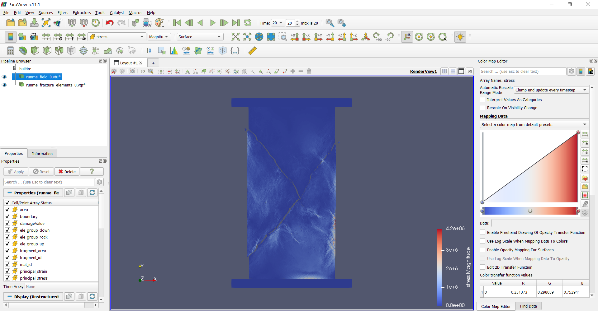
Figure 6: Last step of the UCS test#
If the result is not shown in the correct color scheme, click “Rescale to Visible Data Range”.
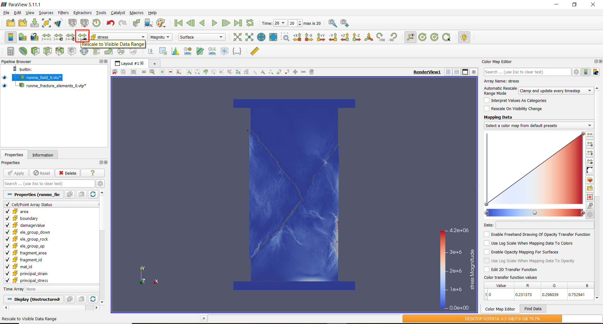
Figure 7: Rescale to the data range#
Select “runme_fracture_elements_0” and choose “Fracture Mode” with type of “Feature Edges” to show the cracking boundaries.
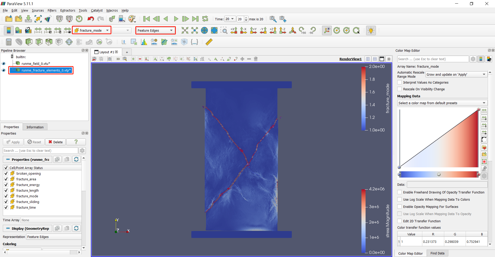
Figure 8: Fracture mode#
To only show the sample without platens, users can select the “runme_field_0.vtu” file and use threshold filter in filters.
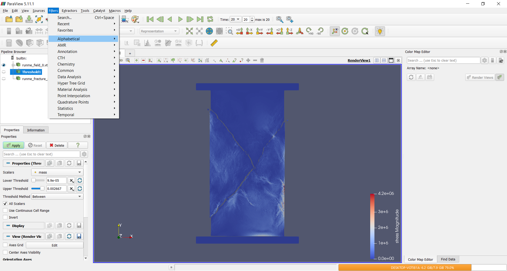
Figure 9: Filters#
To filter the sample out, choose “ele_group_rock” with condition of above upper thresold 1 and apply.
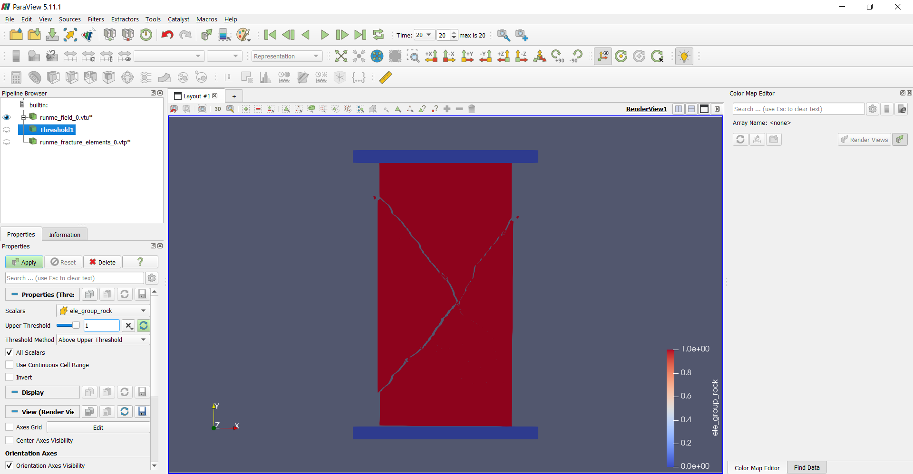
Figure 10: Threshold#
You may show results with the rock sample only now.
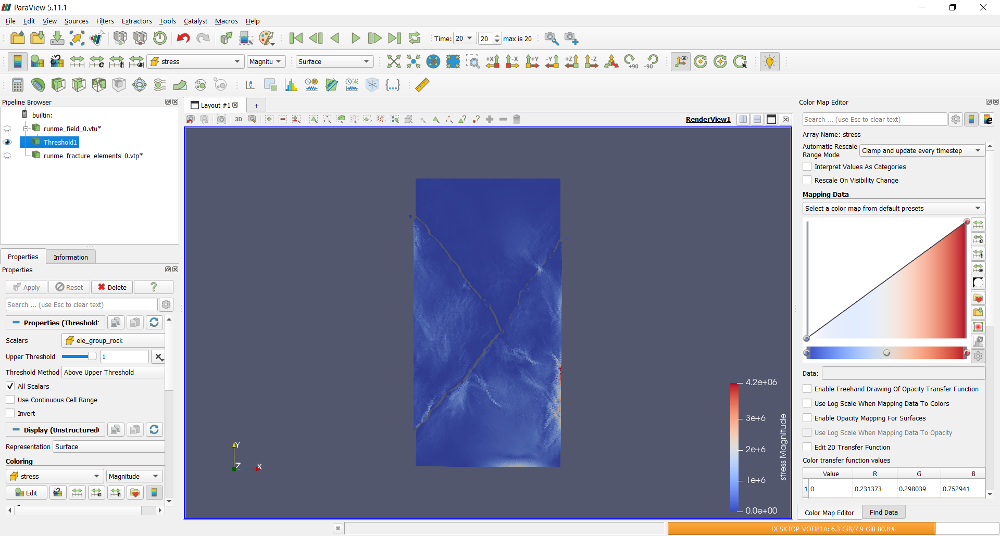
Figure 11: Result#
Data processing by pyfdempp#
What is pyfdempp#
This Python package performs transformations on hybrid finite-discrete element method (FDEM) models with an unstructured grid in vtk/vtu/vtp format. It currently supports arrays of simulation files from the FDEM solvers:
Y-Geo (and its common derivatives), as well as
The package is heavily dependent on pyvista and is limited to Python >=3.5. The package is maintained by the Grasselli’s Geomechanics Group at the University of Toronto, Canada, and is part of a collaborative effort by the open-source pacakge OpenFDEM.
Functionality#
The functionality of this script was developed with the objective of extracting common information needed when running simulations. Highlights of the script are:
Get model information.
import pyfdempp as fd
model = fd.Model("abs_model_path_on_machine")
# Getting number of points in your model.
model.n_points
Output:
11904
Extract information within the FDEM Model based on the name of the array (e.g., Stress, Strain, Temperature, etc…) Works in 2D and 3D.
Extract stress-strain information for UCS and BD Simulations (Works in 2D and 3D). Optional addition of virtual strain gauges (Limited to 2D).
import pyfdempp as fd
model = fd.Model("abs_model_path_on_machine")
model.complete_stress_strain(progress_bar=True)
Output:
Script Identifying Platen
Platen Material ID found as [1]
Progress: |//////////////////////////////////////////////////| 100.0% Complete
1.51 seconds
Platen Stress Platen Strain
0 0.000000e+00 0.000000
1 4.825237e+00 0.009259
2 9.628823e+00 0.018519
3 1.441437e+01 0.027778
4 1.919164e+01 0.037037
.. ... ...
57 2.036137e-30 0.240741
58 2.036137e-30 0.250000
59 2.036137e-30 0.259259
60 2.036137e-30 0.268519
61 2.036137e-30 0.277778
[62 rows x 2 columns]
Plotting stress vs strain curve.
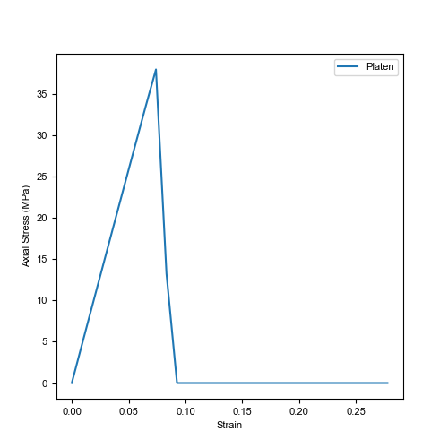
Figure 12: Complete stress-strain curve#
Calculate the Elastic Modulus of the dataset. Eavg, Esec and Etan can be evaluated. Works in 2D and 3D.
import pyfdempp as fd
model = fd.Model("abs_model_path_on_machine")
df_1 = model.complete_UCS_stress_strain(st_status=True)
# Variants of E tangent
print('Etan at 50%%: %.2fMPa' % model.Etan50_mod(df_1)[0])
print('Etan at 50%% with linear best fit disabled: %.2fMPa' % model.Etan50_mod(df_1, linear_bestfit=False)[0])
print('Etan at 50%% using strain gauge data: %.2fMPa' % model.Etan50_mod(df_1, loc_strain='Gauge Displacement Y', plusminus_range=1)[0])
# Variants of E secant
print('Esec at 70%%: %.2fMPa' % model.Esec_mod(df_1, 70))
print('Esec at 50%%: %.2fMPa' % model.Esec_mod(df_1, 0.5))
# Variants of E average
print('Eavg between 50-60%%: %.2fMPa' % model.Eavg_mod(df_1, 0.5, 0.6)[0])
print('Eavg between 20-70%% with linear best fit disabled: %.2fMPa' % model.Eavg_mod(df_1, 0.2, 0.7, linear_bestfit=False)[0])
Output:
Etan at 50%: 51683.94MPa
Etan at 50% with linear best fit disabled: 51639.22MPa
Etan at 50% using strain gauge data: 50275.03MPa
Esec at 70%: 51681.01MPa
Esec at 50%: 51817.43MPa
Eavg between 50-60%: 51594.49MPa
Eavg between 20-70% with linear best fit disabled: 51660.62MPa
Extract information of a particular cell based on a sequence of array names. This can be extended to extracting information along a line. Works in 2D and 3D.
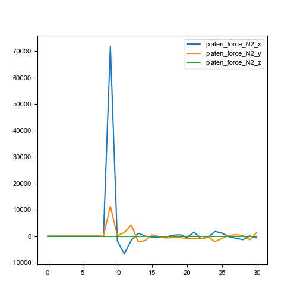
Figure 13: Plot point values over time#
Extract information of a threshold dataset criteria based on a sequence of array names. Works in 2D and 3D.
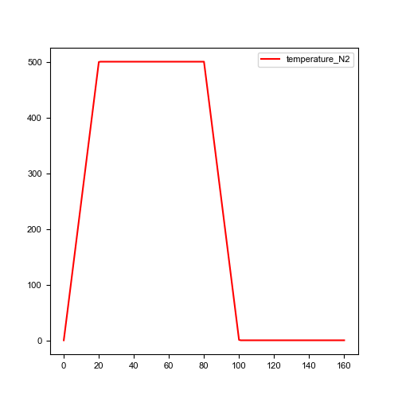
Figure 14: Temperature evolution over time#
Extract mesh information and plot rosette/polar plots. Limited to 2D.
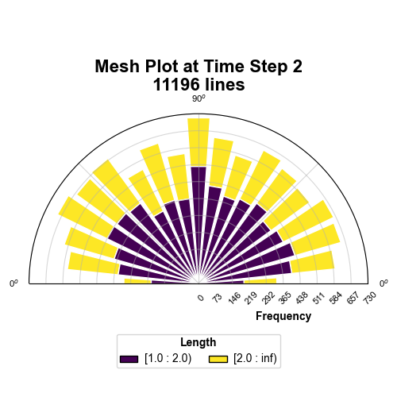
Figure 15: Rose diagram of mesh at TS2#
Automatic detection/ User-defined assigment of loading direction when analysing mechanical simulations, namely UCS, BD, and PLT, in both 2D and 3D simulations.
Script Identifying Platen
Platen Material ID found as [1]
3D Loading direction detected as [1] is Y-direction
Values used in calculations are
Area 3721.00
Length 122.00
Progress: |//////////////////////////////////////////////////| 100.0% Complete